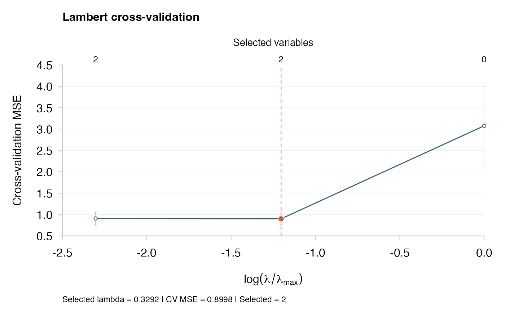
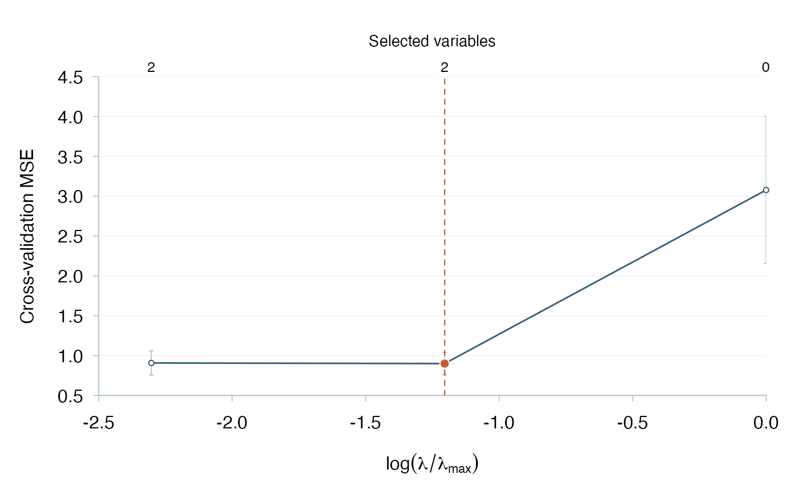
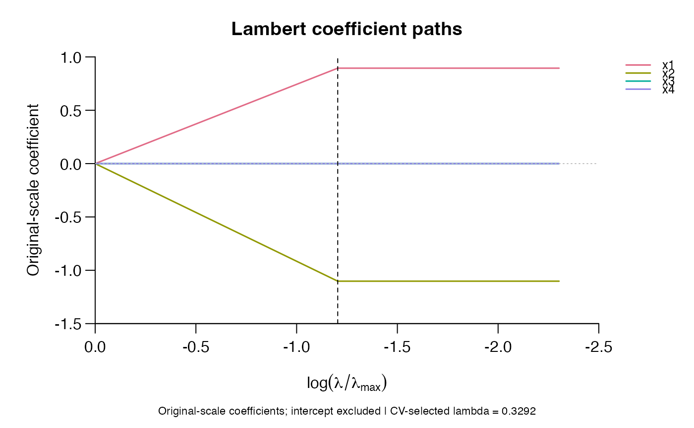
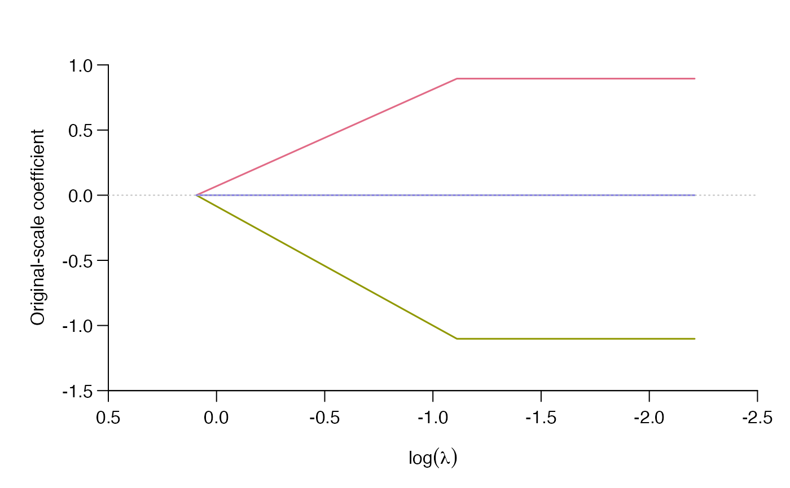

Inspect and Predict from Lambert Fits
methods.RdExtract original-scale coefficients, predict new observations, inspect numerical status, or plot fitted paths and cross-validation scores.
Usage
# S3 method for class 'lambert'
coef(object, index = NULL, ...)
# S3 method for class 'cv.lambert'
coef(object, ...)
# S3 method for class 'lambert'
predict(object, newx, index = NULL, ...)
# S3 method for class 'cv.lambert'
predict(object, newx, ...)
# S3 method for class 'lambert'
print(x, ...)
# S3 method for class 'cv.lambert'
print(x, ...)
# S3 method for class 'lambert'
plot(x, ..., xaxis = c("lambda", "fraction"),
style = c("detailed", "paper"), labels = FALSE,
col = NULL, selected = NULL, selected_col = "black",
main = NULL, xlab = NULL, ylab = "Original-scale coefficient")
# S3 method for class 'cv.lambert'
plot(x, xaxis = c("fraction", "lambda"),
show_nzero = TRUE, label_cex = NULL,
col = "#315C76", selected_col = "#C65D32",
main = NULL, xlab = NULL,
ylab = "Cross-validation MSE", error_bars = TRUE,
bar_col = "#B5C4CE", style = c("detailed", "paper"),
type = c("cv", "coefficients"), labels = FALSE, ...)Arguments
- object, x
A fitted
lambertorcv.lambertobject.- newx
Finite numeric matrix on the original predictor scale. Column count must match training; if training columns were named, names and order must also match. No automatic column reordering occurs.
- index
Integer path positions to extract.
NULLselects all positions. There is no coefficient interpolation between path positions.- xaxis
Use log relative penalty fractions or log absolute full-training penalty levels. CV objects default to fractions; path objects default to absolute lambda. CV candidates still use fold-specific entry scores in both displays.
- show_nzero
Display the full-training selected-variable counts above every path position, excluding the intercept.
- label_cex
Optional positive character expansion for the unrotated upper labels. The default adapts to label widths and spacing. For long paths, export a wider plot to keep all labels legible.
- error_bars
Draw descriptive mean plus/minus one fold-based standard error at each eligible CV position. Defaults to TRUE.
- bar_col
Color of the vertical error bars and caps.
- style
The default
"detailed"adds a title and compact selected-fit summary;"paper"uses a compact display without these default annotations.- type
For a CV object, show its CV error plot or its stored full-training coefficient paths. No additional fitting is performed.
- labels
For coefficient paths, show a color legend with predictor names. The intercept is excluded. Defaults to FALSE; large models may need a larger device.
- selected
Optional path index to mark with a dashed line. CV objects supply their selected index automatically. A path fitted without CV has no automatically selected penalty.
- col, selected_col
Colors for CV points or coefficient curves, and for the selection line and highlighted minimum. Coefficient paths use a distinct-color palette when
colis omitted. Supplied curve colors are recycled across predictors.- main, xlab, ylab
Title and axis labels. The detailed style supplies a default title; explicit
main = NULLsuppresses it. A NULL x-axis label uses the mathematical expression corresponding toxaxis.- ...
Named graphical arguments such as
xlimandylim. The CV plot manages its coordinates, plot type, axes and annotations internally. Use a linear plotting scale because the horizontal coordinates are already log-transformed. Other non-plot methods reject unused arguments.
Details
CV prediction and coefficient extraction use only the selected model,
and fail clearly when it is unverified. Path prediction and coefficient extraction refuse requested
unverified positions. The coefficient path plot leaves gaps at unverified
positions; the CV plot shows fold-mean MSE against the logarithm of the
relative penalty and marks the selected fraction with one dashed vertical line.
The CV horizontal axis increases from left to right, placing stronger
regularization on the right. Coefficient paths retain a decreasing horizontal
axis. An explicit xlim overrides either direction.
Default limits are rounded outward to tick values, with no axis expansion;
the horizontal and vertical axes share a native L-shaped frame.
CV scores are displayed as open circles joined by a blue line; the selected
minimum is highlighted in orange. Missing scores leave gaps in the curve. The detailed CV
view reports the selected full-training lambda, mean CV MSE and selected-variable
count. The paper style omits these annotations while retaining error bars and
upper counts. The upper labels show
counts from verified full-training models with original-scale coefficient
magnitudes greater than \(10^{-8}\). Every path position is labeled; repeated
counts are retained. Unverified or absent counts appear as two dashes, never
as zeros. Older CV objects without counts still plot with a warning and
unavailable upper labels; no fitting is triggered. An unverified selected
full-training fit produces a warning. Incomplete CV candidates are omitted
from the display. Graphical parameters are restored after plotting.
For candidate \(k\), the bars extend from \(\overline L_k-s_k/\sqrt{K}\)
to \(\overline L_k+s_k/\sqrt{K}\), where \(L_{k,f}\) is its MSE in
validation fold \(f\), \(\overline L_k\) is the arithmetic mean of these
\(K\) losses, and \(s_k\) is their sample standard deviation (divisor
\(K-1\)). Bars are computed only when every fold loss is finite; unavailable
bars are omitted. Negative lower endpoints are not truncated. Default y-axis
limits include the bars; a user-supplied ylim may clip them.
Training folds overlap, so this conventional fold-based standard-error display
is descriptive, not an independent-sample confidence interval. It does not
change the minimum-CV selection rule or introduce a one-standard-error rule.
Bars use stored losses, including those in older objects; no refitting occurs.
Use error_bars = FALSE to hide them.
Coefficient paths display beta, on the original predictor scale,
against log penalty; the intercept is excluded. Coefficient magnitudes across
differently scaled predictors are not a standardized measure of importance.
A horizontal line marks zero. CV paths also mark the selected penalty,
with a warning if that selected fit is unverified. Unverified positions are
left as gaps rather than interpolated, and a single-position path uses points.
labels = TRUE adds a predictor legend outside the plotting region.
Stored older objects may contain only a prefix of the full path; only available
positions are displayed. Graphical parameters and fitted objects are preserved.
Value
Coefficient extraction returns a matrix with an intercept row.
For lambert, coefficient extraction has \(p+1\) rows and one
column per requested index; row one is the intercept. For cv.lambert,
it has a single selected column. Prediction returns an observations-by-path-positions
numeric matrix, with one column for a selected CV fit. Even a single
observation or path position retains matrix dimensions. Printing and plotting return the fitted object invisibly.
Examples
set.seed(42)
x <- matrix(rnorm(40 * 4), 40, 4)
colnames(x) <- paste0("x", 1:4)
y <- x[, 1] - x[, 2] + rnorm(40)
cv <- cv.lambert(x, y, foldid = rep(1:5, each = 8),
lambda_fraction = c(1, .3, .1))
plot(cv)

plot(cv, style = "paper")

plot(cv, type = "coefficients", labels = TRUE)

plot(cv$lambert.fit, style = "paper")
